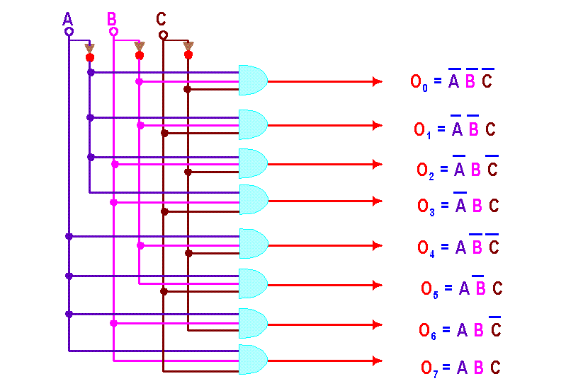
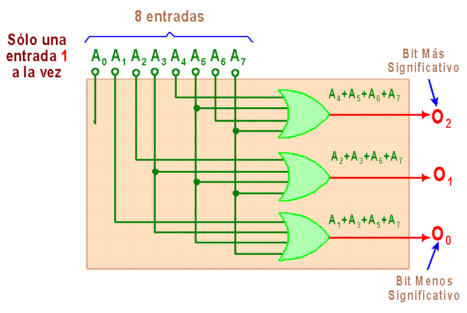
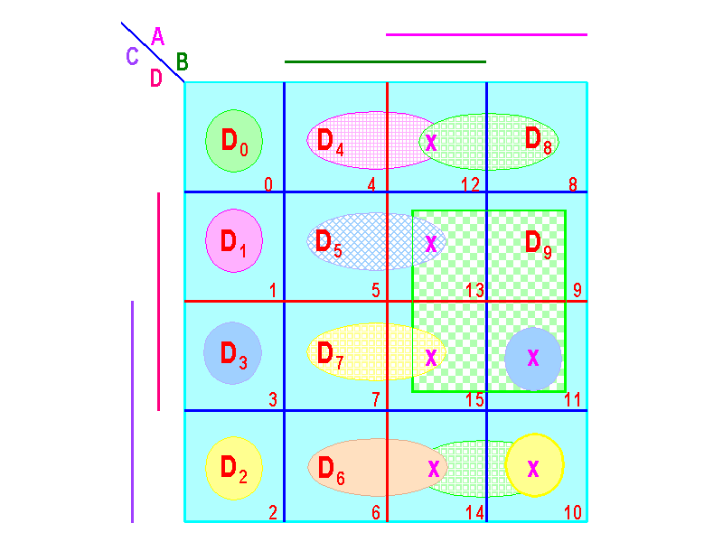
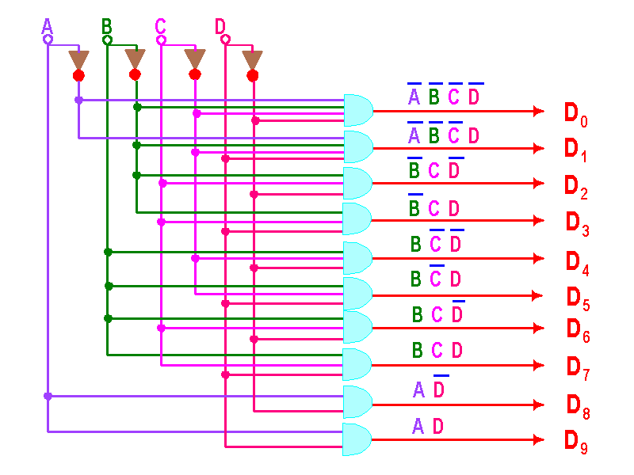
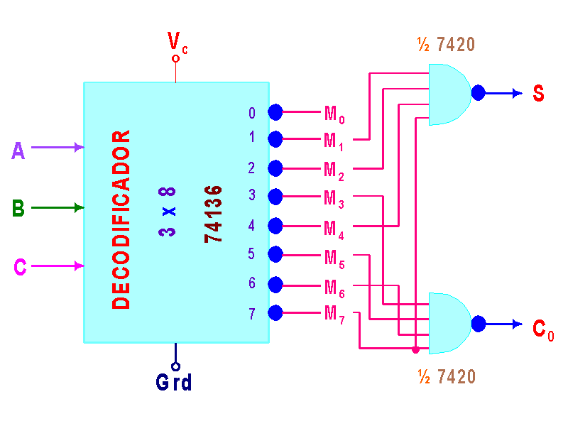

DECODIFICADORES Y CODIFICADORES NIVEL SSI Y MSI. APLICACIONES
Los sistemas digitales contienen datos o información que está en alguna forma de código binario, los cuales se operan de alguna manera. En este tema se examinan circuitos combinatorios, cuyas aplicaciones incluyen:
- Cambio de datos de una forma a otra.
- Tomar datos y enviarlos a uno de varios destinos.
Muchos de los circuitos lógicos que cumplen estas funciones están ahora como circuitos integrados MSI. Por esta razón, no nos concentraremos en el diseño de estos circuitos, sino que investigaremos cómo se usan solos o en combinación, para cumplir varias operaciones sobre datos digitales. Las operaciones que se discuten son: Decodificación y codificación.
DECODIFICADORES
Un decodificador es un circuito combinacional que convierte la información binaria de n lÃneas de entradas a un máximo de 2n lÃneas únicas de salida. Para cada una de las combinaciones de entrada sólo una de la salidas estará activada con un 1 (para cuando es lógica positiva) y todas las otras salidas estarán en 0. Muchos decodificadores se diseñan para producir salidas activas con un 0 (lógica negativa donde la salida seleccionada es 0 mientras que las otras son 1). Esto último se indica siempre por la presencia de pequeños cÃrculos en las lÃneas de salida del diagrama del decodificador y ésto es de gran utilidad a la hora de diseñar circuitos debido a que los decodificadores son muy usados para direccionamiento de periféricos donde dichos periféricos tienen una lÃnea de habilitación (indicada con una E por ENABLE) que regularmente es de lógica negativa (indicada con el cÃrculo en la entrada o con la raya sobre la E). Si la información decodificada tiene condiciones no usadas o “irrelevantesâ€, entonces el decodificador tendrá menos de 2n salidas como es el caso del decodificador BCD a decimal que tiene 4 bits de entrada (necesarios para expresar los números BCD) y sólo 10 lÃneas de salida. Es interesante comentar que en algunos decodificadores de este tipo cuando se agrega a la entrada un código que no es BCD válido ninguna de las salidas se activa. Recuerden que en todo caso SÓLO UNA SALIDA ESTARà ACTIVA.
La siguiente figura muestra un decodificador de 3 entradas y 23 = 8 salidas. Observen que la única diferencia significativa con respecto al demultiplexor es que no tiene la “lÃnea de entrada†caracterÃsticas de ellos. Este decodificador se le conoce como “Decodificador Binario a Octal†(o “Convertidor de Binario a Octal†o incluso “decodificador de 3 a 8â€).

Este circuito muestra el decodificador con salida positiva. Si lo quisiéramos con salida negativa los integrados a la salida deberÃan ser compuertas NAND. Se observa con facilidad (si lo desea haga la tabla de la verdad) que este decodificador tendrá únicamente una salida activa a la vez. OBSERVE que cada una de las salidas corresponde al término mÃnimo de la entrada. Esta caracterÃstica es muy útil a la hora de implementar funciones lógicas con decodificadores.
En general, los decodificadores tienen n lÃneas de entradas y 2n lÃneas de salida y de estas últimas sólo estará activa aquella que sea el “término mÃnimo†(y sólo ella ya que las salidas son mutuamente exclusivas) representado por la entrada.
CODIFICADORES
Un codificador, en cambio, tiene un número de lÃneas de entrada, de las cuales sólo una es activa (ya sea con lógica positiva o negativa) en un tiempo dado y produce un código de salida de N bits, dependiendo de cuál entrada está activa. O sea, el codificador hace el proceso contrario del decodificador.
Se vio que un decodificador binario a octal acepta un código binario de entrada de 3 bits y activa una y sólo una de las 8 lÃneas de salida. Un codificador octal a binario opera de la manera opuesta. Acepta ocho lÃneas de entrada y produce un código de 3 bits a la salida. Hagamos la tabla de la verdad, concluyamos cuales son las funciones y luego veamos el gráfico que nos muestra esta implementación a nivel SSI de este circuito:
| Entradas | Salidas | |||||||||
| A0 | A1 | A2 | A3 | A4 | A5 | A6 | A7 | O2 | O1 | O0 |
| 1 | 0 | 0 | 0 | 0 | 0 | 0 | 0 | 0 | 0 | 0 |
| 0 | 1 | 0 | 0 | 0 | 0 | 0 | 0 | 0 | 0 | 1 |
| 0 | 0 | 1 | 0 | 0 | 0 | 0 | 0 | 0 | 1 | 0 |
| 0 | 0 | 0 | 1 | 0 | 0 | 0 | 0 | 0 | 1 | 1 |
| 0 | 0 | 0 | 0 | 1 | 0 | 0 | 0 | 1 | 0 | 0 |
| 0 | 0 | 0 | 0 | 0 | 1 | 0 | 0 | 1 | 0 | 1 |
| 0 | 0 | 0 | 0 | 0 | 0 | 1 | 0 | 1 | 1 | 0 |
| 0 | 0 | 0 | 0 | 0 | 0 | 0 | 1 | 1 | 1 | 1 |
De esta tabla podemos concluir que:
O2 = A4 + A5 + A6 + A7
O1 = A2 + A3 + A6 + A7
y
O0 = A1 + A3 + A5 + A7
Por lo que el esquemático queda:

Se supone que una y sólo una de las entradas es 1 a la vez, asà que sólo hay 8 condiciones posible de entrada. El circuito está diseñado de tal manera que cuando A0 es 1, se genera a la salida el código binario 000. Cuando A1 es 1, se genera el código binario 001, cuando A2 es 1, se genera el código binario 010 y asà sucesivamente. El diseño del circuito es muy simple, puesto que involucra analizar cada bit de salida y determinar para cuáles casos de entrada ese bit es 1 y luego pasar los resultados por una compuerta OR. Por ejemplo, la tabla funcional muestra que O0 (que es el bit menos significativo del código de salida) debe ser 1 cuando cualesquiera de las entradas A1, A3, A5 o A7 sean 1. Se observa también que que la entrada A0 no se usa nunca ya que cuando este bit es “uno†todas las salidas deben ser “ceroâ€, pero resulta que si todas las entradas son cero (indicando que no hay un número octal a la entrada, por ejemplo) todas las salidas del circuito también serán cero. Esto genera una discrepancia que puede ser solventada agregándole otra salida al circuito que se activará única y exclusivamente cuando todas las entradas sean cero y de esta forma indicarnos cuando se cumple esa condición (fácilmente implementable con una OR).
Por otro lado está la posibilidad de que haya más de un uno en la entrada (una situación inválida pero por 'x' o por 'y' posible). Las implementaciones integradas de “codificadores†resuelven este problema agregando un circuito de alta prioridad para estos casos. La alta prioridad lo que hace es que si el uno de la posición cero está activo, asume que el número a la salida es el cero sin importar lo que exista en el resto de las entradas. Si el la posición cero está en cero la la uno en uno entonces a la salida habrá un uno sin importar el resto de la entrada y asà sucesivamente.
Como ejercicio, diseñe un circuito codificador de 4 a 2. La salida deberá ser cero (00) en el caso que no hay ninguna entrada al codificador (cuando la entrada tiene puros ceros), en todos los casos que no sean válidos (cualquier caso que tenga más de un uno) y cuando la entrada es propiamente la que corresponde al cero (I0=1). Para solventar la discrepancia agregue otra salida al circuito que será “uno†cuando la entrada si sea válida.
APLICACIONES
Veamos algunas aplicaciones con decodificadores.
Diseñe un decodificador de BCD a decimal con compuertas (a nivel SSI). En realidad este circuito ya existe a nivel MSI pero se hace este ejercicio para dar a conocer como se diseña y que se debe esperar de él. Este un caso en el que no se tienen para n bits de entrada 2n salidas ya que los casos del 10 al 15 no son válidos (asumimos que no son posibles y las tomaremos como “condiciones irrelevantesâ€). Veamos la tabla de la verdad:
| A | B | C | D | D0 | D1 | D2 | D3 | D4 | D5 | D6 | D7 | D8 | D9 |
| 0 | 0 | 0 | 0 | 1 | 0 | 0 | 0 | 0 | 0 | 0 | 0 | 0 | 0 |
| 0 | 0 | 0 | 1 | 0 | 1 | 0 | 0 | 0 | 0 | 0 | 0 | 0 | 0 |
| 0 | 0 | 1 | 0 | 0 | 0 | 1 | 0 | 0 | 0 | 0 | 0 | 0 | 0 |
| 0 | 0 | 1 | 1 | 0 | 0 | 0 | 1 | 0 | 0 | 0 | 0 | 0 | 0 |
| 0 | 1 | 0 | 0 | 0 | 0 | 0 | 0 | 1 | 0 | 0 | 0 | 0 | 0 |
| 0 | 1 | 0 | 1 | 0 | 0 | 0 | 0 | 0 | 1 | 0 | 0 | 0 | 0 |
| 0 | 1 | 1 | 0 | 0 | 0 | 0 | 0 | 0 | 0 | 1 | 0 | 0 | 0 |
| 0 | 1 | 1 | 1 | 0 | 0 | 0 | 0 | 0 | 0 | 0 | 1 | 0 | 0 |
| 1 | 0 | 0 | 0 | 0 | 0 | 0 | 0 | 0 | 0 | 0 | 0 | 1 | 0 |
| 1 | 0 | 0 | 1 | 0 | 0 | 0 | 0 | 0 | 0 | 0 | 0 | 0 | 1 |
| 1 | 0 | 1 | 0 | X | X | X | X | X | X | X | X | X | X |
| 1 | 0 | 1 | 1 | X | X | X | X | X | X | X | X | X | X |
| 1 | 1 | 0 | 0 | X | X | X | X | X | X | X | X | X | X |
| 1 | 1 | 0 | 1 | X | X | X | X | X | X | X | X | X | X |
| 1 | 1 | 1 | 0 | X | X | X | X | X | X | X | X | X | X |
| 1 | 1 | 1 | 1 | X | X | X | X | X | X | X | X | X | X |
De esta tabla se deducen las siguientes funciones:
D0 = ∑(0) + d(10,11,12,13,14,15)
D1 = ∑(1) + d(10,11,12,13,14,15)
D2 = ∑(2) + d(10,11,12,13,14,15)
D3 = ∑(3) + d(10,11,12,13,14,15)
D4 = ∑(4) + d(10,11,12,13,14,15)
D5 = ∑(5) + d(10,11,12,13,14,15)
D6 = ∑(6) + d(10,11,12,13,14,15)
D7 = ∑(7) + d(10,11,12,13,14,15)
D8 = ∑(8) + d(10,11,12,13,14,15)
D9 = ∑(9) + d(10,11,12,13,14,15)
Estas funciones pueden trabajarse por mapa de Karnaugh igual que hemos hecho hasta ahora, pero en el caso de funciones de conmutación (donde cada función tiene sólo una posible salida en uno) puede usarse un sólo mapa para todas las funciones. (Si lo desea haga los mapas de las funciones por separado y demuestre que se cumple).

Por lo tanto las funciones quedan:
D0(A,B,C,D)=A'B'C'D', D1(A,B,C,D)=A'B'C'D, D2(A,B,C,D)=B'CD', D3(A,B,C,D)=B'CD, D4(A,B,C,D)=BC'D', D5(A,B,C,D)=BC'D, D6(A,B,C,D)=BCD', D7(A,B,C,D)=BCD, D8(A,B,C,D)=AD' y D9(A,B,C,D)=AD
por lo que el esquemático nos quedarÃa:

Este circuito es sólo válido si NO es posible opciones diferentes de BCD a la entrada. Si se quiere que todas las salidas sean cero para casos no válidos en BCD debe hacerse otro circuito. Hágala como ejercicio.
Otro.
Como se comentó en el tema anterior, los decodificadores (o demultiplexores) también pueden ser usados para el desarrollo de circuitos combinacionales con la ayuda de compuertas OR a la salida para “sumar†los términos mÃnimos que forman la función. Si nuestro diseño requiere más de una función de salida, entonces podemos hacer uso de mas de una compuerta OR (una para cada función requerida). Veamos un ejemplo: Construir un circuito sumador completo de dos bits con un decodificador y dos compuertas NAND. (OJO, Sà pedà implementar con NAND, no con OR)
Ya sabemos que nuestras funciones para un sumador completo de 2 bits. Asumiendo que A y B son los bits a sumar y C el acarreo de entrada tenemos que:
S(A,B,C)=∑(1,2,4,7)
Co(A,B,C)=∑(3,5,6,7)
Nuestro sumador quedarÃa:

Observe bien este circuito. El decodificador tiene las salidas con “lógica negativa†por lo que tenemos a la salida NO son los términos mÃnimos sino los términos máximos. Por esta razón nuestra implementación puede realizarse fácilmente con compuertas NAND (o incluso AND; hágalo como ejercicio). Recuerden que, por ejemplo la función S, puede ser expresada en una suma de productos (con términos mÃnimos) o como un producto de sumas (con términos máximos). Asà que S=m1+m2+m4+m7=M0M3M5M6=(M1M2M4M7)' (ya que M1M2M4M7 es S') y es exactamente esta última forma la que estamos aprovechando. Hacemos el análisis recÃproco para Co. Como ejercicio, realice la misma implementación pero con compuertas OR.
El método del decodificador puede usarse para implementar cualquier circuito combinacional pero en realidad debe pensarse bien lo que se va a hacer debido a que pueden existir soluciones más óptimas. Este método es principalmente útil para el desarrollo de circuitos con varias salidas ya que para una sola salida yo dirÃa que es preferible usar la implementación con multiplexores tal y como se vio en el tema anterior.
La mayorÃa de las aplicaciones con codificadores que he visto son de implementación a nivel SSI. Ya de eso hablamos antes asà que no repetiré otros casos de ello.
EJERCICIOS
- Como ya se planteó haga el BCD a decimal con puro cero a la salida si la entrada NO es BCD válido.
- Como ya se planteó, haga el sumador completo de 2 bits con un decodificador y compuertas OR.
- Diseñe un decodificador de 2 a 4 con una entrada de habilitación. La salida es con lógica negada. La entrada de habilitación (E por Enable) es de lógica positiva. En el caso de que E=1, todas las salidas son uno (recuerde que el circuito tiene salida con lógica negativa asà que este es el comportamiento normal). Si E=0, la salida del decodificador cero cero dependiendo de la entrada. Haga el esquemático.
- Diseñe un decodificador de 4 a 16 con 2 decodificadores 3 a 8. TIP: Recuerde que los decodificadores tienen la entrada ENABLE.
- Realice las siguientes funciones con decodificadores:
- f(A,B,C,D) = ∑ (0,4,6,10,11,13)
- f(w,x,y,z) = ∏ (3,4,5,7,11,12,14,15)
- f(a,b,c,d) = ∑(3,5,7,11,15)
- f(A,B,C,D,E) = ∏ (0,1,2,8,9,11,15-19,24,25,29-31)
- f(A,B,C,D,E,F) = ∑ (0,2,4,5,7,8,16,18,24,32,36,40,48,56)
- Un circuito tiene 5 entradas A, B, C, D y E. Considere que A es el más significativo. De las entradas, B, C, D y E representan un número BCD. A será una entrada de control que cumple que:
- Cuando el control está en 0 lógico, la salida Z es igual a 0 si el número decimal es impar y 1 si es par.
- Cuando el control está en 1 lógico, la salida Z es igual a 1 cuando la entrada es múltiplo de 3, en caso contrario es 0.
- Diseñe un circuito utilizando un decodificador y compuertas externas, considerando lógica negativa y que 0 es par.
- Describa como funciona y como está estructurado un codificador de decimal a BCD con salidas de lógica negativa. Haga la tabla de la verdad.
En la próxima clase se verá el TEMA 11: Display de 7 segmentos, circuito manejador de display.